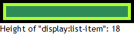
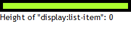

根据 CSS2.1 规范中的描述，'display:list-item' 会使元素 (如 LI 元素) 生成一个原始块级框 (principal box) 用于呈现元素内容及一个可选的列表项行内框。
'list-style-type' 特性指定了当 'list-style-image' 特性值为 'none' 或者是其指向的 URI 无法被显示时呈现的列表项标记的外观样式。若
'list-style-type' 特性的值为 'none' 则表示无标记。
关于 CSS 列表的更多内容，请参考 CSS2.1 规范 12.5 Lists 中的内容。
Opera 中 'display' 特性值为 'list-item' 的内容为空的元素若其 'list-style-type' 特性值不为 'none'，则此元素不会产生高度。
此问题会导致列表类型元素在不同浏览器中计算后的高度产生差异，从而影响页面布局。
| Opera |
|---|
根据问题描述构建如下测试代码：list-item.html
<!DOCTYPE html> <html> <head> <script> function $(id) { return
document.getElementById(id); } if (!window.getComputedStyle) { window.getComputedStyle = function
($target) { return $target.currentStyle; }; } window.onload = function () { $('info').innerHTML =
'Height of "display:list-item": ' + $('dis_li').clientHeight; } </script> </head>
<body style="margin:0; font:14px 'Trebuchet MS';"> <div
style="background:greenyellow; float:left; border:5px solid black; padding:5px;"> <div
id="dis_li" style="display:list-item; width:200px; background:seagreen;
list-style-type:disc;"></div> </div> <div id="info"
style="clear:left;"></div> </body> </html>
上面代码中有一个 'display' 特性值为 'list-item' 的 DIV 元素，则其为列表类元素，其 'list-style-type' 特性值不为 'none'，并且其内容为空。
这段代码在不同浏览器中运行效果为：
| IE6 IE7 IE8 Firefox Chrome Safari | Opera |
|---|---|
|  |  |
可见只有 Opera 中此内容为空的 DIV 元素的计算高度为 0。
对于列表类元素 (display:list-item)，规范中并未明确说明是否需要为其列表项标记所构成的行内框留有一定高度。
若需要这个高度，则最好不要使列表元素内容为空，可以加入一个 。
| 操作系统版本: | Windows 7 Ultimate build 7600 |
|---|---|
| 浏览器版本: |
IE6
IE7 IE8 Firefox 3.6.10 Chrome 8.0.533.0 dev Safari 5.0.2 Opera 10.63 |
| 测试页面: | list-item.html |
| 本文更新时间: | 2010-10-18 |
LI list-style-type list-item 列表 高度